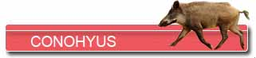
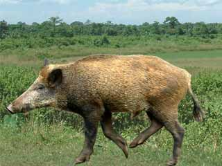
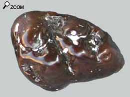
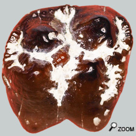

Le cochon courreur


Conohyus Simorrensis est un suidé arrivé d’Afrique en même temps que beaucoup d'animaux migrants au langhien (MN5). Il est de taille comparable à celle d’ Hyotherium. Les membres sont longs et fins comparés aux porcs actuels plus trapus. Les sabots sont petits limitant le contact au sol. Ce sont donc des animaux adaptés à la course.
Le genre Conohyus est issu d’une branche évoluée du genre Hyotherium. Conohyus ne devait pas être sur la même niche écologique que son parent. Pour faire simple le système dentaire de Conohyus est plus spécialisé que celui de hyotherium.
Conohyus Simorrensis : Victime de sa spécialisation

Chez Conohyus Simorrensis, on observe un développement important des dernières prémolaires, qui s’accentue encore au cours de l’évolution. En même temps les premières prémolaires s’atrophient, alors que la 3 ieme et la 4 ieme PM devienent démesurées.
Quant aux molaires, elles possèdent des cuspides bunodontes renflées avec une faible expression du système des vallées entre crêtes. Par contre les collines des molaires portent des enfractuosités destinées à augmenter la surface d'émail. D'ailleurs cet émail est significativement plus épais que celui observé chez Hyotherium Soemmeringi.
Si l'on a compris assez tôt que cette singularité dentaire avait une origine alimentaire, par contre son explication est restée longtemps mystérieuse. On estime maintenant que Conohyus devait se
 nourrir en grande partie de fruits et graines encapsulées dans une gangue dure en bois. ( Des noix, des amendes, des fruits durs du miocène disparus?...) Ces mets ne sont pas à la portée de tous les herbivores et seuls les plus spécialisés peuvent accéder aux graines riches en amidon. D'abord les prémolaires devaient être suffisamment hautes et solides pour casser la coquille de ces fruits afin de libérer les amendes. Un vrai casse-noisette! Ensuite les molaires devaient être assez robustes pour éviter une abrasion trop forte due aux résidus de coquilles dans les fruits concassés.
Conohyus était donc un animal très spécialisé. Le genre disparaît au miocène moyen avec C. Ultimus, probablement à la faveur de changements climatiques qui ont dû contrarier l’environnement écologique de Conohyus.
Encore un animal trop spécialisé et donc trop vulnérable... |